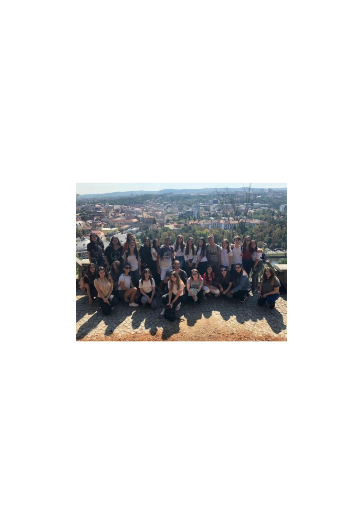
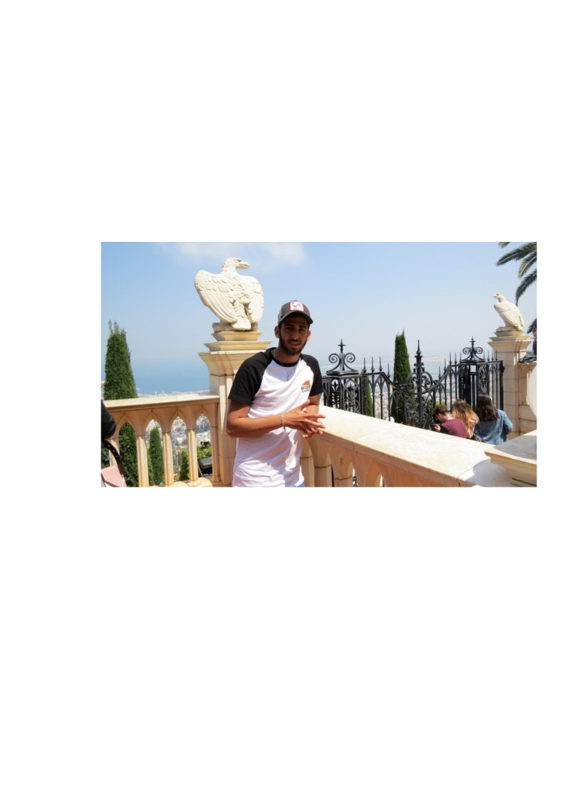

Shlomi, adolescent în armată: “În Israel nu ai cum să te
plictisești ca adolescent”
Shlomi Tzuberi este un adolescent din Israel, mai exact din Petah Tikva, un oraș în
apropiere de Tel Aviv. Acesta, la fel ca restul adolescenților de vârsta lui servește țara prin
serviciu militar, care în Israel este obligatoriu după absolvirea liceului.
În cadrul proiectului “Twin Schools Program”, în 2019 un grup de elevi din Șimleu
Silvaniei, România au făcut un schimb de experiențe cu un grup de elevi din orașul Petah Tikva,
Israel. Unul dintre participanții acestui proiect am fost eu, iar cu ocazia asta l-am cunoscut pe
Shlomi, băiatul din Israel la care am stat. Cât timp am fost în Petah Tikva am observat câteva
diferențe între viața noastră ca adolescenți în România și cea a celor din Israel, așa că l-am rugat
pe Shlomi să ne spună câte ceva despre viața în Israel ca adolescent.
(Membrii programului TSP 2019-2020)
1. Cum este viața ca adolescent în general în Israel?
“Viața ca adolescent aici este categoric una în care nu te plictisești, avem de toate pentru
toți. Este o țară relative mica, dar totuși avem deschidere la mare, munți, desert, chiar și
zăpadă. Israel este o țară foarte deschisă, primește foarrte mulți turiști. Avem și multe
locuri creștine, dar cu toate astea, avem în partea opusă și o viață de noapte destul de
activă, mai ales în Tel Aviv, așa că nu cred că ai cum să te plictisești pe aici, doar dacă
asta e ceea ce vrei.”

2. Cum este la liceu? Din câte am auzit și observat este diferit față de România
“La liceu sunt foarte stricți în legătură cu prezența. Aici liceul durează trei ani. În primul
an ești testat și pus într-o anumită grupă, în funcție de nivelul tău de cunoaștere la materia
respectivă. În următorii doi ani ai examene de <<matriculare>>, așa le zicem noi, iar
dacă le treci, absolvi cu specializare către materiile la care alegi să dai aceste examene.
Nota la aceste examene este formată din 70% nota de la test și 30% activitatea în cadrul
orelor de curs, care sunt mai lungi decât la voi.”
(Shlomi la grădinile din Haifa)
3. După liceu, sunteți obligați să faceți armată?
“Da, ești obligat să te înrolezi și să te dedici țării. Băieții trebuie să facă aproximativ trei
ani și fetele doi, însă ele pot să scape de armată, cu condiția să facă sericiu national, cum
ar fi să fie asistent pe ambulanță sau ajutor de educatoare, ceva care să servească țara și
care să te formeze ca persoană.”
4. Tu acum ești în armată?
“Da, m-am înscris în noiembrie, întru-un ciclu de doi ani și opt luni.”
5. În ce parte a țării ești repartizat?
“Baza de antrenament la care sunt repartizat este în sudul țării, undeva aproape de Gaza,
iar când merg cu autobuzul spre baza noastră pot vedea o parte din Gaza.”
6. Este periculos acolo?
“În zona în care sunt eu este, deoarece practic te afli într-o zonă în care nu ești dorit, dar
la nivelul unei zile obișnuite nu pot să spun că mă simt neapărat în pericol.”
7. Cum stau lucrurile între Israel și Palestina?
“Acum lucrurile s-au mai calmat puțin, din cauza pandemiei de corona, însă de multe
ori Hamas - o grupare/organizație teroristă care controlează Gaza încearcă să amenințe
Israelul, dar avem un nivel ridicat al protecției, așa că dacă vei întreba lume pe stradă
dacă le este frică, vor zice că nu. Chiar zilnic vin din Gaza în Israel arabi la joburi, sunt
înregistrați, bine-nțeles, dar așa, ca să îți formezi o imagine… și nu numai din Gaza, mai
sunt oameni care vin și din Siria la lucru sau pentru îngrijiri medicale.”
8. Legat de Palestina, mai trimit rachete către Israel?
“Încă mai trimit, nu așa des ca în trecut, probabil s-or fi prins că avem <<domul de
fier>>, care contracarează și distruge înainte să lovească pământul. Este când Israelul le
răspunde cu aceeși monedă, însă rar, deoarece ne străduim cât mai mult să nu rănim
persoane inocente, de aceea unele atacuri au fost chiar anulate, deoarece au aflat că în
zonă erau persoane nevinovate.”
9. După ce termini armata, ce planuri ai?
“Ca majoritatea persoanelor care termină armata aici, am să fac o pauză și am să
călătoresc prin lume, după care cred că mă voi întoarce în Israel și mă voi axa pe
facultate, vreau să mă îndrept spre ramura economiei, să îmi deschid propria afacere.
Sunt familiarizat cât de cât cu domeniul, deoarece înainte să intru în armată am lucrat la
un fast-food unde vindeam boluricu açai, am fost un fel de mână dreaptă a șefului, dacă
pot spune.”